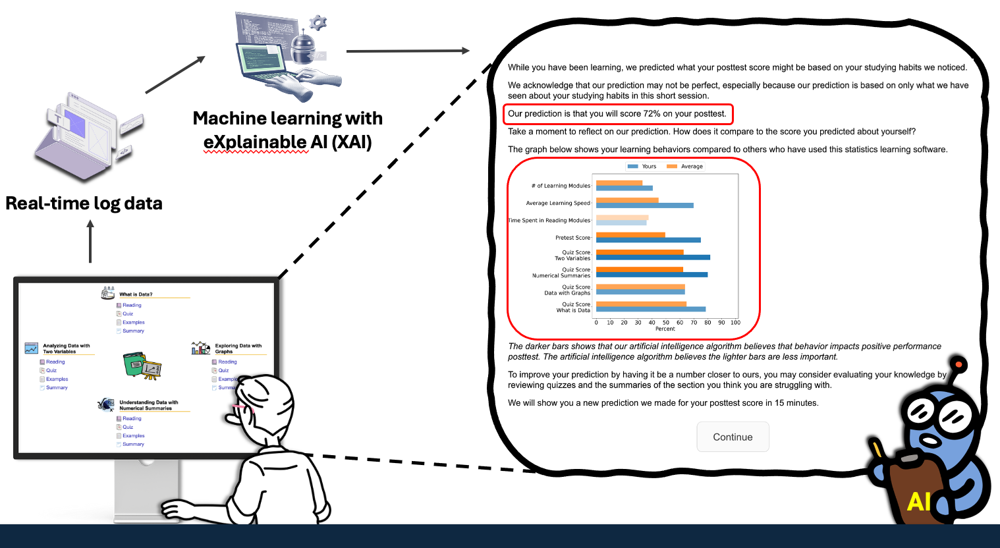
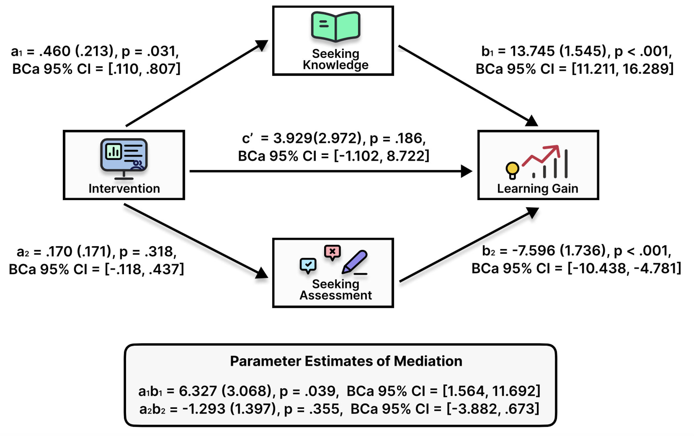
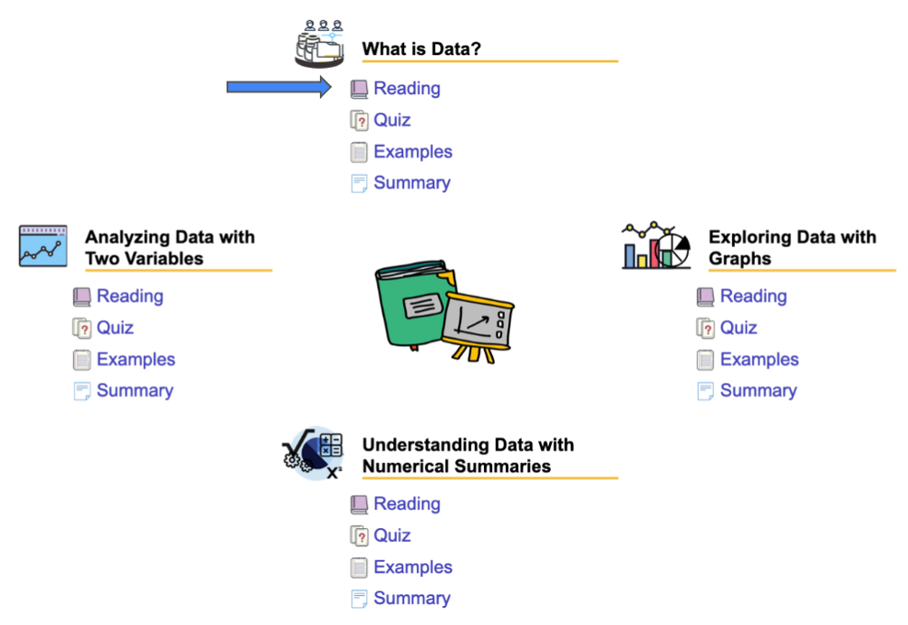
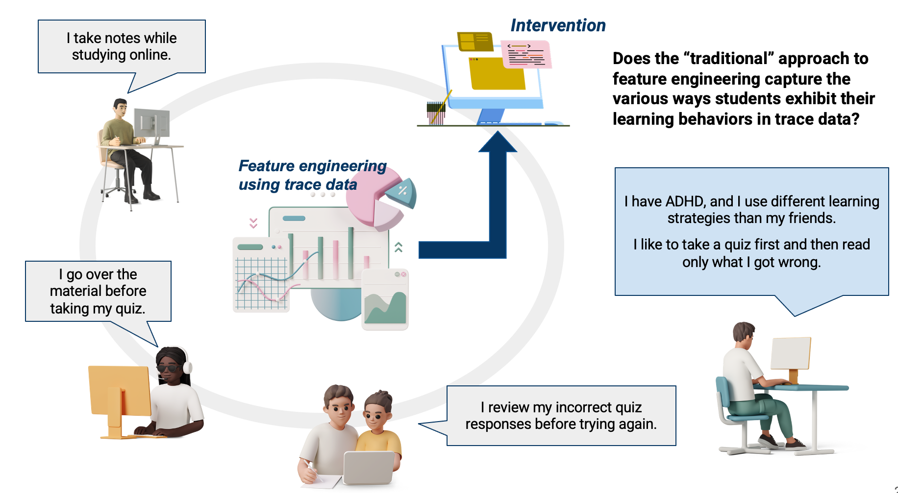

Research Interests


Leveraging XAI to design and build interventions that foster various facets of metacognition, self-regulated learning, and a growth mindset in an online context.
Broadly, my research explores how XAI-driven interventions can foster self-regulated learning and metacognitive abilities through the lens of HCI and cognitive science. These skills are crucial not only for students but also as lifelong competencies that empower individuals across various contexts. By developing XAI-driven interventions, I aim to help people understand the reasoning behind AI-generated feedback and recommendations, enabling them to make more informed learning decisions. I hope this work contributes to our understanding of how XAI can be used to help people improve their self-regulated learning, enhance their metacognitive abilities, and foster a growth mindset.
- Lee, H., Stinar, F., Zong, R., Valdiviejas, H., Wang, D., & Bosch, N. (2025). Learning behaviors mediate the effect of AI-powered support for metacognitive calibration on learning outcomes. Proceedings of the 2025 CHI Conference on Human Factors in Computing Systems, pp. 17:1-18. DOI: 10.1145/3706598.3713960 [CHI presentation video] [Source code for the web platform] [Best Paper Honorable Mention]
- Lee, H. & Bosch, N. (in preparation). EXcel My SRL: Explainable AI-driven self-regulated learning training system. [OSF preregistration]
- Hur, P., Lee, H., Bhat, S., & Bosch, N. (2022). Using machine learning explainability methods to personalize interventions for students. Proceedings of the 15th International Conference on Educational Data Mining (EDM 2022), pp. 438–445. DOI: 10.5281/zenodo.6853181
- Lee, H., Hur, P., Bhat, S., & Bosch, N. (2021). Promoting self-regulated learning in online learning by triggering tailored interventions. CEUR Workshop Proceedings: Joint Workshops at the International Conference on Educational Data Mining (EDM), pp.1-8. [PDF]

Understanding how people demonstrate self-regulated learning, metacognitive skills, and how they respond to mistakes in computer-based learning environments.
To design and develop XAI-driven interventions that help individuals enhance and apply various facets of metacognition and self-regulated learning, it is crucial to understand how these skills manifest in computer-based learning environments. To this end, I leverage sequential pattern mining and statistical methods grounded in learning theories to measure both the expression and application of these skills.
- Lee, H. & Bosch, N. (2024). Subtopic-specific heterogeneity in computer-based learning behaviors. International Journal of STEM Education, 11(61), 1-31. DOI: 10.1186/s40594-024-00519-x[Source and Analysis Code for the Web Platform]
- Lee, H. & Bosch, N. Metacognitive miscalibration predicts students’ subsequent metacognitive strategy use in computer-based learning environments. International Journal of Artificial Intelligence in Education (IJAIED) (under revision).
- Lee, H., Belitz, C., Nasiar, N., Fancsali, S., Almoubayyed, H., Ritter, S., Baker, R., Ocumpaugh, J., & Bosch, N. Mistake-response behavioral sequences predict future academic performance in intelligent tutoring systems. (in preparation)
- Lee, H., Reyes, T., Burns, S., Bates, M., Moran, C., Cimpian, J., Kearfott, H., Vythoulkas, G., Perry, M., & Bosch, N. Teacher interaction sequences in online professional development: Implications for design and support. (in preparation).

Discovering the sources of bias within machine learning models and improving fairness metrics to detect bias
While detecting biases in machine learning models is crucial, uncovering their underlying causes is even more important because it empowers us to proactively mitigate biases. I am particularly interested in leveraging XAI to help us understand these causes.
- Lee, H., Belitz, C., Nasiar, N., & Bosch, N. (2025). XAI reveals the causes of attention deficit hyperactivity disorder (ADHD) bias in student performance prediction. Proceedings of the 15th Learning Analytics and Knowledge Conference (LAK 2025), pp.418-428. DOI: 10.1145/3706468.3706521
- Belitz, C., Lee, H., Nasiar, N., Fancsali, S., Ritter, S., Almoubayyed, H., Baker, R. S., Ocumpaugh, J., & Bosch, N. (2024). Hierarchical dependencies in classroom settings influence algorithmic bias metrics. Proceedings of the 14th International Conference on Learning Analytics & Knowledge (LAK 2024), pp. 210-218. DOI: 10.1145/3636555.3636869
Exploring gender bias in large language models (LLMs) and in bibliometric research.
Studies relevent to LLMs and bibliometrics
- Lee, H., Mishra, S., Mishra, A., You, Z., Kim, J., & Diesner, J. (2025). Revisiting gender bias research in bibliometrics: Standardizing methodological variability using Scholarly Data Analysis (SoDA) Cards. Quantitative Science Studies (QSS) (under revision). [preprint]
- Mishra, A., Lee, H., Jeoung, S., Torvik, V., & Diesner, J. (2025). Patterns of diversity in biomedical coauthorships: An analysis across authors’ ethnicity, gender, age, and expertise. PLOS ONE, 20(1): e0316890. DOI: 10.1371/journal.pone.0316890
- You, Z.*, Lee, H.*, Mishra, S., Jeoung, S., Mishra, A., Kim, J., & Diesner, J. (2024). Beyond binary gender labels: Revealing gender bias in LLMs through gender-neutral name predictions. Proceedings of the 5th Workshop on Gender Bias in Natural Language Processing (GeBNLP), 255-268, at Annual Conference of the Association for Computational Linguistics (ACL). DOI: 10.18653/v1/2024.gebnlp-1.16 *denotes equal contribution
- Becker, M., Han, K., Werthmann, A., Rezapour, R., Lee, H., & Diesner, J. (2024). Detecting impact relevant sections in scientific research authors. Proceedings of Joint International Conference on Computational Linguistics, Language Resources and Evaluation (LREC-COLING 2024), pp. 4744-4749. [PDF]
- Hum, S., Stinar, F., Lee, H., Ginger, J., Lane, H. C. (2022). Classification of natural language descriptions for Bayesian Knowledge Tracing in Minecraft. Proceedings of the 23rd International Conference on Artificial Intelligence in Education (AIED 2022), pp.250-253. DOI: 10.1007/978-3-031-11647-6_45